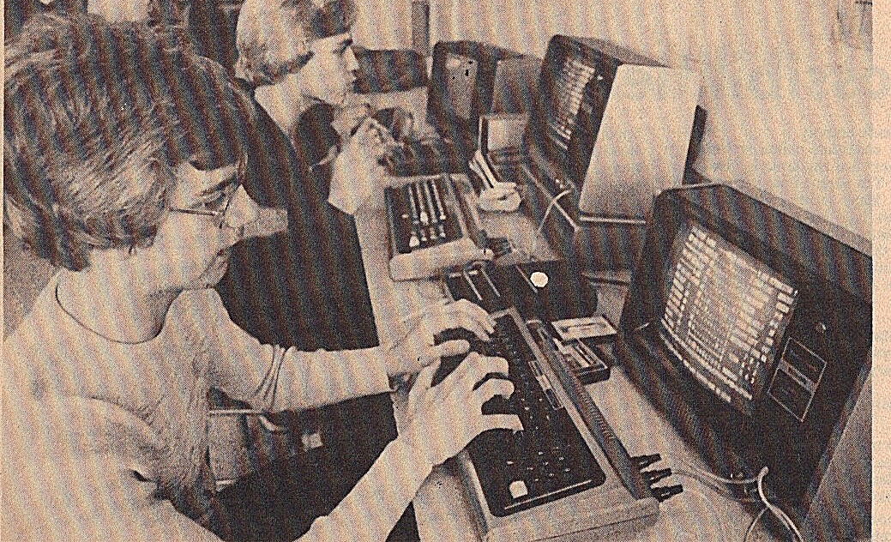

I guess I was a geek before geeks were cool, before software devoured the world and turned flying cars and lunar colonies into surveillance capitalism and tweets.
I can still remember the first time I sat down at the keyboard of a TRS-80 Model 1, wrote my first program, and started down this path.
So there's really nothing personal here, it's just programming.